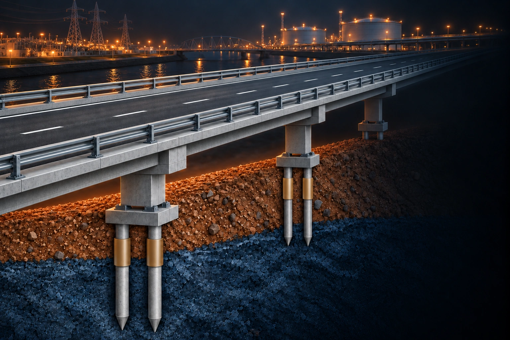
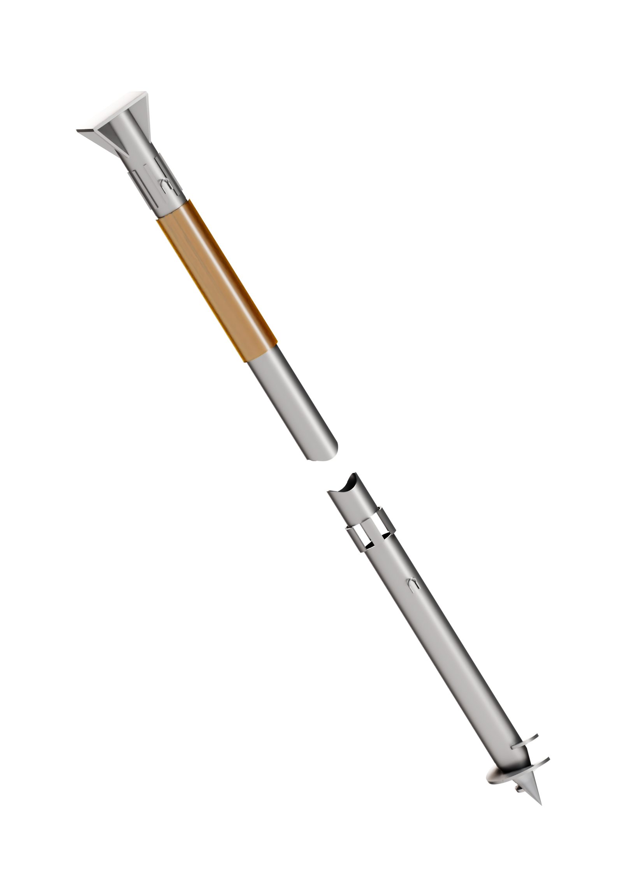
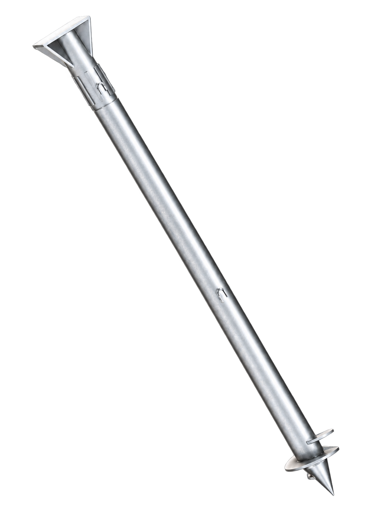

ОСПТ «Релайн» / Автомобильные дороги
Мосты и эстакады на свайных фундаментах
Защита опор от морозного пучения
Оболочка ОСПТ «Reline» защищает сваи от морозного пучения и коррозии.
Подробнее о продуктеОСПТ «Релайн» / Эффект применения
Позволяем сокращать длину свай
Меньше металла и затрат на свайный фундамент
ОСПТ «Релайн» снижает силы морозного пучения, которые действуют на сваю. Это позволяет рассмотреть меньшую длину свай при проектировании фундамента. Возможность сокращения подтверждается расчётом с учётом грунта, нагрузок и требуемой несущей способности.
- От 15 до 55% — Снижение общих затрат на проект (по независимым оценкам Заказчиков).
- До 1,5 раза — Сокращение длины свай за счёт снижения касательных сил морозного пучения.
- До 3 раз — Сокращение времени монтажа за счет снижения объемов работ.
- 50+ лет — Долговечность покрытия свайного фундамента.


ОСПТ «Релайн» / Конструкция покрытия
Как устроена оболочка ОСПТ «Релайн»
Защита и прочное сцепление со сваей
Слои работают совместно. Наружная поверхность снижает воздействие пучинистого грунта, а внутренний подслой связывает оболочку с металлом. Вместе они обеспечивают противопучинную и антикоррозионную защиту сваи.
- Полимерное покрытие — защита поверхности и снижение смерзания.
- Барьерная функция — ограничение контакта металла с внешней средой.
- Адгезионный подслой — прочное сцепление оболочки со сваей.
ОСПТ «Релайн» / Конструкция покрытия
Полимерное покрытие для защиты свай
Защитная поверхность между металлом и грунтом
Наружная полимерная поверхность ОСПТ «Релайн» принимает контакт с грунтом и влагой. Покрытие защищает сваю от механических воздействий и снижает смерзание с пучинистым грунтом. Это помогает уменьшить выталкивающую нагрузку при промерзании.
← Все слоиОСПТ «Релайн» / Конструкция покрытия
Адгезионный слой — прочное сцепление со сваей
Удерживает полимерную оболочку на металле
Адгезионный подслой связывает оболочку ОСПТ «Релайн» с подготовленной поверхностью сваи. Прочное сцепление помогает покрытию сопротивляться сдвигу при воздействии пучинистого грунта.
← Все слои